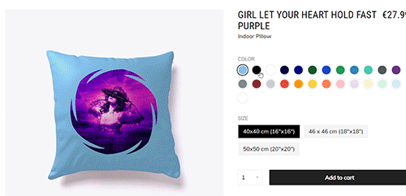
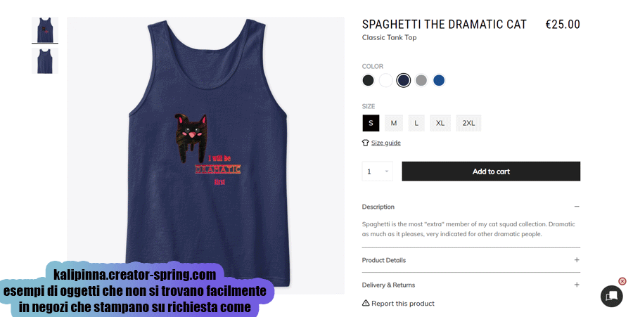
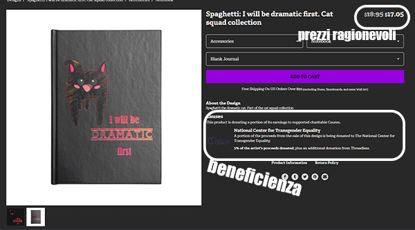

Ciao, sono Kalipinna, e qui è dove puoi trovare i miei design, codici sconto, e scoprire come chiedere colori personalizzati
I miei negozi
(Io faccio i design, loro offrono la merce, stampano e spediscono):
redbubble
(il più famoso, si possono fare motivi/pattern, tantissimi prodotti, e puoi trovare una spiegazione su come richiedere colori di sfondo personalizzati più in basso dato che ogni design ne ha uno soltanto).threadless
(prezzi più bassi, dono una parte dei miei ricavi in beneficienza, da poco ho iniziato ad aggiungere i miei design anche qui, per via dei loro prodotti speciali come scarpe e magliette fronte e retro).teespring
(tutti i design con sfondo trasparente sono anche qui, sto dando priorità ad oggetti difficili da trovare, e ovviamente a tutti i cuscini e tazze per darvi la possibilità di vedere l'aspetto dei design su tanti colori diversi).Redbubble è dove puoi trovare tutte le mie piccole creazioni, che sono state o verranno aggiunte negli altri negozi in seguito
Qui un breve video con il mio negozio registrato oggi (27 settembre 2021) per dare un'occhiata alla visualizzazione predefinita di molti prodotti diversi, vedere come alcuni abbiano già copie in diversi colori o con motivi/pattern - e come si possono filtrare i risultati in base al prodotto cercato, o cercarne altri dopo aver cliccato sul design.
Il punto è: più di 80 prodotti per ogni design, cartelle per trovare le collezioni, e tanto altro!
In breve: mandami un messaggio qui o in uno dei miei social se:
- vedi un design che ti piace ma il prodotto che vuoi non è stato reso disponibile, per esempio "ciao, puoi fare lo zaino di -titolo del design-?"
- vuoi un colore di sfondo diverso, come "ciao, posso avere questo qui su uno sfondo rosso?"
- vuoi comprare un design su un altro dei miei negozi magari perchè hai già un account lì o per qualsiasi motivo, per esempio "ciao, posso avere -titolo design di Redbubble- ma su Threadless?
- vuoi qualche piccola modifica a un design come "ciao, questo design ha i colori di quella bandiera lgbt, puoi farmene uno ma con la bandiera di questo orientamento?" o "puoi farmi questo ma più piccolino sul vestito/molto più grande che copre quasi tutto l'oggetto?"
- hai una richiesta di personalizzazione molto specifica come "puoi metterci il mio nome/segno zodiacale/anno?". In questo caso sarai probabilmente l'unico acquirente quindi per favore chiedi soltanto se sicuro di volere proprio quel design con quella piccola modifica (e una serie di richieste e modifiche farà alzare il prezzo)
Potrei avere domande ma se si può fare, e ciò dipenderà dal sito, inizierò a lavorarci subito o ti farò sapere se non è possibile. Non sei obbligato a comprare nulla in ogni caso!
Non sei sicuro di quale colore di sfondo vorresti? C'è un solo colore di sfondo disponibile (come accade su Redbubble) e sai che vuoi qualcosa di diverso ma prima vuoi vedere che aspetto ha su sfondi verdi, rossi, gialli, blu, e poi scegliere il tuo preferito?
Allora vai nel mio negozio Teespring e nelle prime file troverete prima un cuscino per ogni design aggiunto (dopo i cuscini, tutti gli altri prodotti) clicca su uno di loro ed ecco tante opzioni! Scopri se c'è una combinazione di colori che ti piace:

Tutto qui! E mandami una bubblemail su redbubble o un messaggio qui o su facebook/instagram, se scegli la chat qui puoi anche farlo
anonimamente.
Può essere anche un semplicissimo "Ciao, vorrei una borsa con il tuo "Spaghetti: I will be dramatic" su sfondo rosso nel tuo negozio di redbubble".
Piccola nota che il risultato finale dipenderà dalle stampanti del negozio, io faccio soltanto le immagini!
Piccola nota che il risultato finale dipenderà dalle stampanti del negozio, io faccio soltanto le immagini!
Vuoi un colore più specifico come#1564db blu per il tuo sfondo? Puoi cercare gli "hex code" su google o cliccare qui
e usare le freccette accanto a 'rgb' finchè non compare "hex", poi copiare il codice che vuoi.
in questo momento su Teespring, a parte i cuscini che erano necessari per offrire opzioni di colori di sfondo, ci sono già molti prodotti disponibili. L'unico punto negativo del sito è che è davvero lento nell'accettare modifiche, quindi mi ci vorrà
tanto tempo per copiare tutto, e la maggior parte degli oggetti possono solo avere designs con sfondo trasparente come i gatti delle gif precedenti. Ci sono tanti prodotti interessanti, come asciugamani da spiaggia, bottiglie, cappelli...

Sto già aggiungendo prodotti su Threadless , ci sono oggetti speciali difficili da trovare altrove come borse-weekend che possono essere personalizzate dappertutto
(e qui aggiungo spesso colori sfumati) + come ho detto è possibile donare a diverse beneficienze tra le opzioni che offrono alla threadless, e io le sto scegliendo a caso, senza particolari collegamenti a ciò che si trova nelle immagini, perchè
voglio beccarle tutte! Come sempre, se c'è qualche design che vorreste vedere lì più in fretta, chiedete e avrà priorità!

codici sconto e saldi:
teespring:
KALISEPT è il codice per il 10% di sconto fino al 30 settembre.threadless:
Grandi sconti su tutto fino a fine settembre (solo nel mio negozio, non in tutto il sito) Presto tutti i miei negozi offriranno tutti i prodotti possibili, così potrai scegliere qualsiasi cosa ovunque,
e nel frattempo... scegli i tuoi colori! E prendi un bel vestito su redbubble, una borsa weekend su threadless, o pantaloncini su teespring!
e nel frattempo... scegli i tuoi colori! E prendi un bel vestito su redbubble, una borsa weekend su threadless, o pantaloncini su teespring!